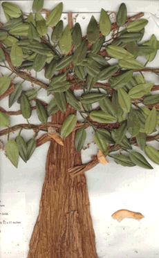
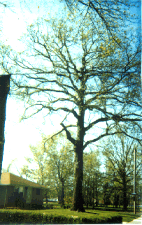

Student Project
Valerie


I watched a tree called a Swamp Oak, and it is 300 years old. It is in my neighbor's yard. Moses Cleveland saw this tree 200 years ago when the Ohio lands were being discovered.
It took this tree 100 years to reach maturity...The tree can live to be 900 years old...If a tree could tell stories, what stories would it tell?
This tree is so
BIG, they don't know how tall it is, but the circumference is 21 feet.
Save the trees. This tree has a story all its own. They help the world and they help us live!!
-Valerie
c. Valerie
Grade 4
Thomas Jefferson Magnet School
Euclid, Ohio USA
"The Swamp Oak"
Paper Twist, Silk Leaves, Seeds, Moss 12"X14"
Swamp Oak
Latin Name: TBA
Age: 300 years old
Circumference at 54 inches from the base: 21 feet
Location: Euclid, Ohio USA
 Return to Main Page
Return to Main Page
June Julian jj68@nyu.edu